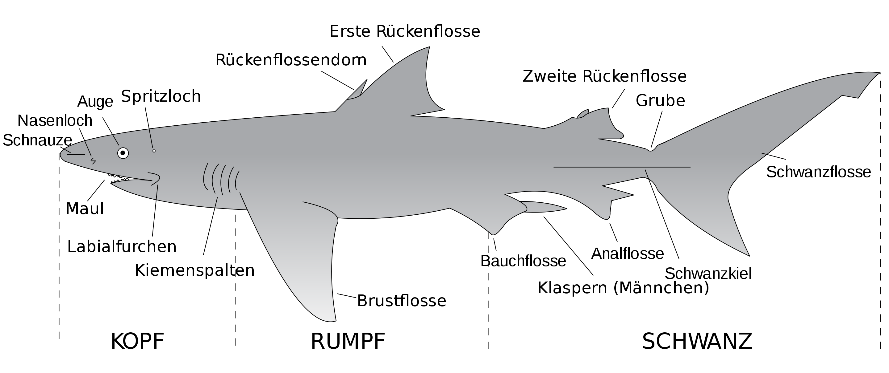

Haie (Selachii, Syn.: Selachimorpha, Selachoidei, Pleurotremata) sind Fische aus der Klasse der Knorpelfische. Es sind weltweit über 500 Arten bekannt. Das Wort Hai stammt vom niederländischen haai ab. Dieses wiederum kommt vom isländischen Wort haki, das Haken bedeutet und eine Anlehnung an die hakenförmige Schwanzflosse der Haie ist. Umgangssprachlich werden die Haie oft Haifische genannt. Die meisten Haie fressen Fische und andere größere Meerestiere; die zwei größten Haiarten, der bis zu 14 m lange und 12 t schwere Walhai, und der Riesenhai sowie der Riesenmaulhai ernähren sich im Wesentlichen von Plankton. Obwohl jährlich nur etwa fünf Menschen infolge von Haiangriffen sterben, gelten die Tiere gemeinhin als kaltblütige Killer und Menschenfresser. Viele Haiarten sind durch übermäßige Befischung in ihrem Bestand bedroht.
Haie stellen eine Gruppe von über 500 Arten dar, die sich in ihrer Größe und ihrem Aussehen teilweise erheblich unterscheiden. Als kleinste bekannte Arten der Haie gelten der Zwerg-Laternenhai (Etmopterus perryi) und der Zylindrische Laternenhai (E. carteri) mit nur 16 bis 20 Zentimetern Körperlänge und einem Gewicht von etwa 150 Gramm. Als größte Arten stehen diesen der bis zu 14 Meter lange und 12 Tonnen schwere Walhai (Rhincodon typus) und der bis zu 10 Meter lange Riesenhai (Cetorhinus maximus) gegenüber, die sich beide fast ausschließlich von Plankton ernähren. Unter den fleischfressenden und jagenden Arten stellt der Weiße Hai (Carcharodon carcharias) mit einer Maximallänge von bis zu 7 Metern die größte Art dar, während der ausgestorbene Riesenhai Megalodon (Otodus megalodon) wahrscheinlich eine Gesamtlänge von 14 bis maximal 20 Meter erreichte. Etwa die Hälfte aller Haiarten erreicht eine Körperlänge von etwa einem Meter, bei 20 Prozent aller Arten liegt diese über 2 Meter.

Der Rumpfbereich beginnt mit den paarigen Brustflossen, die in der Regel im Bereich oder hinter der letzten Kiemenspalte ansetzen. An der Bauchseite folgen diesen die ebenfalls paarigen Bauchflossen, die bei den Männchen mit den paarigen Klaspern, den Kopulationsorganen der Haie, verbunden sind. Auf der Rückenseite befinden sich in der Regel zwei hintereinanderliegende und unpaare Rückenflossen, bei denen häufig (vor allem bei den danach benannten Dornhaien) jeweils ein Rückenflossendorn ausgebildet ist. Bei den meisten Haiarten ist die erste Rückenflosse deutlich größer als die zweite, die meistens im Bereich des Schwanzstiels liegt und bei einzelnen Arten auch fehlen kann. Auf der Bauchseite des Schwanzstiels befindet sich zudem sehr häufig eine unpaare Afterflosse. Schnellschwimmende Haiarten haben zudem seitlich ausgebildete Kiele am Schwanzstiel.
Die Schwanzflosse besteht aus einem oberen und einem unteren Flossenlappen (Lobi), wobei der untere Lobus häufig deutlich kleiner ist als der obere. Dies ist insbesondere bei bodenlebenden Arten wie den Katzenhaien, aber auch bei vielen Arten des Freiwassers, etwa Hammerhaien oder vor allem den Fuchshaien, der Fall. Letztere besitzen einen deutlich verlängerten oberen Schwanzlobus, der bei der Jagd eingesetzt wird. Bei schnellschwimmenden Arten wie den Makohaien oder dem Weißen Hai ist der Schwanz dagegen fast symmetrisch.